14 Địa chỉ cắt kính cận tại Hà Nội chuẩn xịn, giá cả hợp lý
Trong thời đại hiện đại, sự phổ biến của thiết bị điện tử đã làm tăng cao nguy cơ mắc bệnh cận thị ở mọi đối tượng và độ tuổi. Giải pháp tiện lợi và hiệu quả nhất là việc sử dụng kính cận. Chính vì thế, việc lựa chọn địa chỉ cắt kính cận tại Hà Nội chất lượng vô cùng quan trọng.
Top 14 địa chỉ cắt kính cận ở Hà Nội uy tín nhất
Hà Nội là địa điểm có nhiều cửa hàng cắt kính cận uy tín, đa dạng về mẫu mã và phân khúc giá, từ những chiếc kính giá rẻ chỉ vài trăm nghìn đến những sản phẩm cao cấp có giá vài triệu đồng. Việc lựa chọn một địa chỉ phù hợp không chỉ giúp bạn bảo vệ đôi mắt mà còn mang lại sự thoải mái và phong cách cho ngoại hình của bạn.
Dưới đây là danh sách 14 địa chỉ cắt kính cận tại Hà Nội chất lượng đi kèm với dịch vụ tốt được HaNoiReview tổng hợp. Bạn có thể tham khảo và lựa chọn cho mình một địa chỉ đáng tin cậy để bảo vệ cho đôi mắt của mình.
Kính Mắt Ngọc Minh – Since 1989
Ra đời từ năm 1989, Kính Mắt Ngọc Minh là một trong những thương hiệu kính mắt lâu đời và uy tín nhất tại Hà Nội, được hàng chục nghìn khách hàng tin tưởng suốt hơn ba thập kỷ qua. Từ một hiệu kính nhỏ giữa lòng phố cổ, Ngọc Minh đã không ngừng phát triển, trở thành địa chỉ quen thuộc cho những ai muốn cắt kính cận, đo mắt hay tìm kiếm những mẫu kính thời trang chính hãng chất lượng cao.
Điểm đặc biệt giúp Ngọc Minh khác biệt nằm ở chất lượng dịch vụ tận tâm và sự đầu tư bài bản về kỹ thuật.
- Đo Mắt: Sử dụng thiết bị đo khúc xạ hiện đại, hiệu kính mang đến kết quả đo cận – viễn – loạn chính xác tuyệt đối, giúp khách hàng hiểu rõ tình trạng thị lực của mình và chọn được giải pháp phù hợp nhất.
- Cắt Tròng: Dịch vụ cắt, lắp và thay tròng kính được thực hiện bởi kỹ thuật viên lành nghề, sử dụng tròng kính chính hãng từ các thương hiệu hàng đầu thế giới, đảm bảo tầm nhìn rõ nét, chống mỏi mắt và bảo vệ mắt toàn diện.
- Sửa Kính: Hỗ trợ nắn chỉnh gọng, thay ốc, vệ sinh, làm mới và bảo dưỡng kính – hoàn toàn nhanh chóng, cẩn thận và chu đáo.
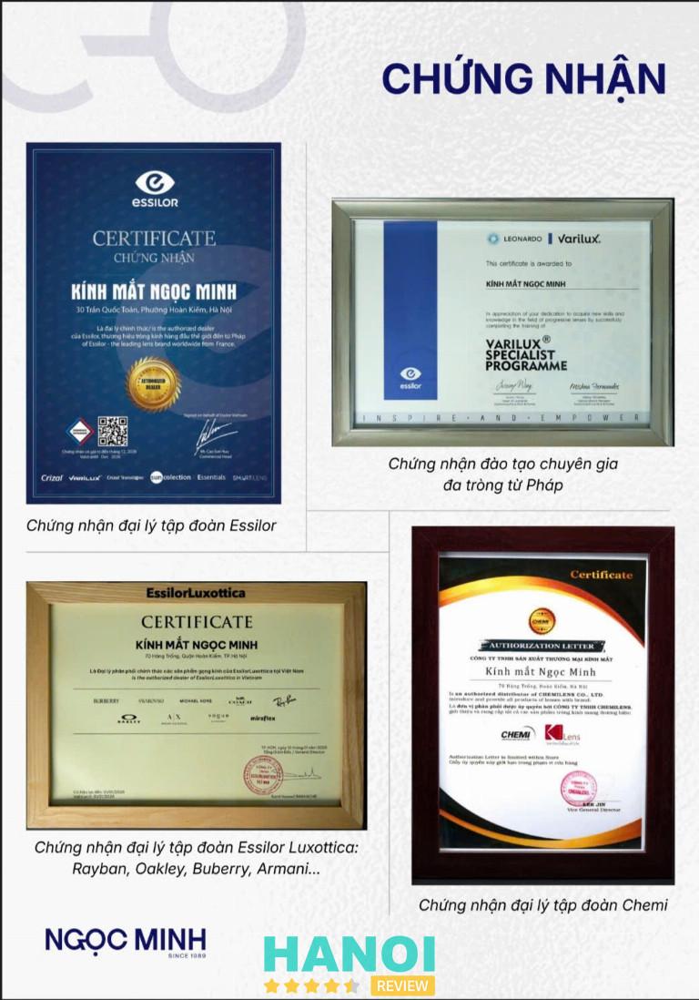
Hiệu kính Ngọc Minh là đại lý phân phối tròng kính chính hãng của các thương hiệu nổi tiếng như Essilor (Pháp), Hoya (Nhật Bản), Chemi (Hàn Quốc), Elements và Zinmy (Singapore) – những cái tên hàng đầu trong lĩnh vực quang học, nổi tiếng về độ trong suốt, khả năng chống UV và ánh sáng xanh vượt trội.
Bên cạnh đó, Ngọc Minh còn là đại lý ủy quyền chính thức tại Việt Nam của nhiều thương hiệu gọng kính và kính mát danh tiếng thế giới: Ray-Ban, Burberry, Vogue, Michael Kors, Furla, Chopard, Dupont, mang đến hàng trăm mẫu kính phong phú từ cổ điển thanh lịch đến trẻ trung hiện đại. Mỗi chiếc kính tại Ngọc Minh không chỉ giúp nhìn rõ hơn, mà còn tôn lên cá tính và phong cách riêng của người đeo.
Không chỉ tập trung vào chất lượng sản phẩm, Kính Mắt Ngọc Minh còn được khách hàng đánh giá cao bởi giá cả hợp lý, dịch vụ chu đáo và đội ngũ tư vấn viên thân thiện, chuyên nghiệp. Nhân viên tại đây luôn sẵn sàng hỗ trợ để mỗi khách hàng có thể chọn được mẫu kính phù hợp với khuôn mặt, phong cách sống và nhu cầu sử dụng – từ học sinh, sinh viên đến dân văn phòng hay người yêu thời trang.
Với hơn 35 năm kinh nghiệm trong ngành kính mắt, Ngọc Minh vẫn luôn giữ vững phương châm hoạt động: “Tận tâm trong từng dịch vụ – Chính xác trong từng chi tiết – Chính hãng trong từng sản phẩm.” Nếu bạn đang tìm một địa chỉ cắt kính cận uy tín, chất lượng, dịch vụ tốt và giá cả hợp lý tại Hà Nội, thì Kính Mắt Ngọc Minh – Since 1989 chắc chắn là một lựa chọn xứng đáng để gửi gắm đôi mắt của mình.
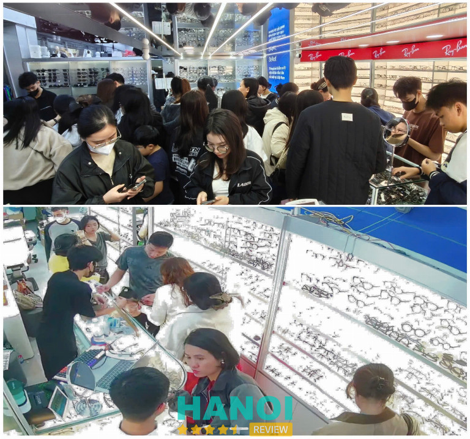
Thông tin liên hệ:
- Địa chỉ:
70 Hàng Trống, Hà Nội – 0229 9999 555
30 Trần Quốc Toản, Hà Nội – 0243 9432 180 - Website: Kinhmatngocminh.vn
- Fanpage: Kính Mắt Ngọc Minh – Since 1989
- Giờ mở cửa: 8h30 – 18h30 (Thứ 2 – Chủ nhật)
Kính Chống Ánh Sáng Xanh Kavi (Kính Mắt Kavi)
KAVI là thương hiệu kính nổi tiếng chuyên về dòng kính Chống Ánh Sáng Xanh giúp giảm mỏi mắt cho người dùng máy tính, điện thoại với gần 10 năm nghiên cứu và phát triển. Bên cạnh đó, Kavi cũng có các dòng kính được nhiều người yêu thích bởi tính năng đặc biệt của kính như: Kính đổi màu nhanh khi ra nắng, Kính cận chơi bóng đá, bóng rổ, pickleball, Kính trẻ em chống gãy,…
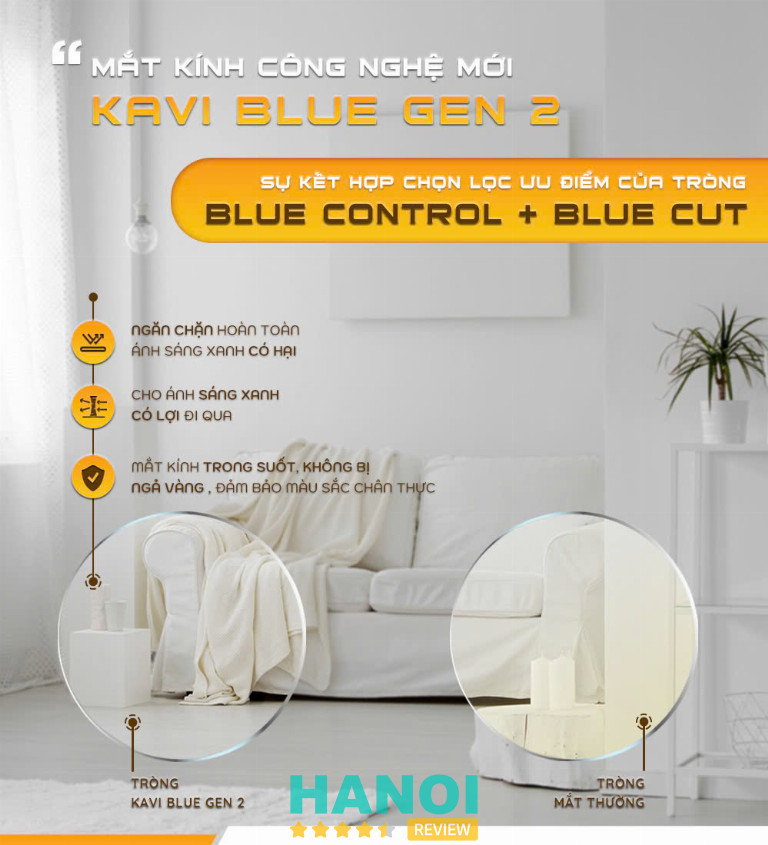
Với đội ngũ chuyên gia tư vấn giàu kinh nghiệm cùng sản phẩm chất lượng cao, Kavi luôn tự tin mang lại sự hài lòng cho khách hàng với chính sách bảo hành kính 1 năm và đổi trả miễn phí trong 30 ngày nếu không hài lòng.
Kavi được đánh giá là cửa hàng với nhiều thiết kế gọng bền, nhẹ phù hợp cho dân văn phòng cùng với mắt kính chính hãng từ Hàn Quốc, Nhật Bản, Singapore… có giá hợp lý hơn so với các nơi khác. Đây là địa điểm mua kính mà dân văn phòng và các bạn học sinh, sinh viên nên cân nhắc nếu cần 1 chiếc kính chuyên dành cho học tập và làm việc.
Thông tin liên hệ:
- Địa chỉ: Ngõ 421 Đường Hoàng Quốc Việt, Ngách 4, Số nhà 14, Phường Nghĩa Đô, Quận Cầu Giấy, Hà Nội (xem bản đồ đường đi)
- Điện thoại: 091.5500.899
- Email: storekavi@gmail.com
- Website: kavi.vn – kinhmatkavi.vn
- Fanpage: fb.com/kinh.chong.anh.sang.xanh
Shop Kính Hàng Độc – Since 2006
Đây là một trong số Cửa Hàng Chính Thức của tập đoàn ESSILOR Pháp và CHEMILEN Hàn Quốc tại Việt Nam, được uỷ quyền phân phối trực tiếp tròng mắt Essilor và Chemi Chính Hãng.
Trong nhiều năm qua, Shop Kính Hàng Độc – Since 2006 luôn được biết đến là một trong những địa chỉ kính mắt uy tín tại Hà Nội. Đây cũng chính là lời giải đáp hoàn hảo cho những ai đang băn khoăn tìm nơi mua gọng kính hay cắt kính cận chất lượng. Điểm nổi bật của cửa hàng là chế độ bảo hành rõ ràng: mọi sản phẩm tròng kính đều được bảo đảm bằng chính sách 1 đổi 1, nhằm mang lại sự an tâm tuyệt đối cho khách hàng.
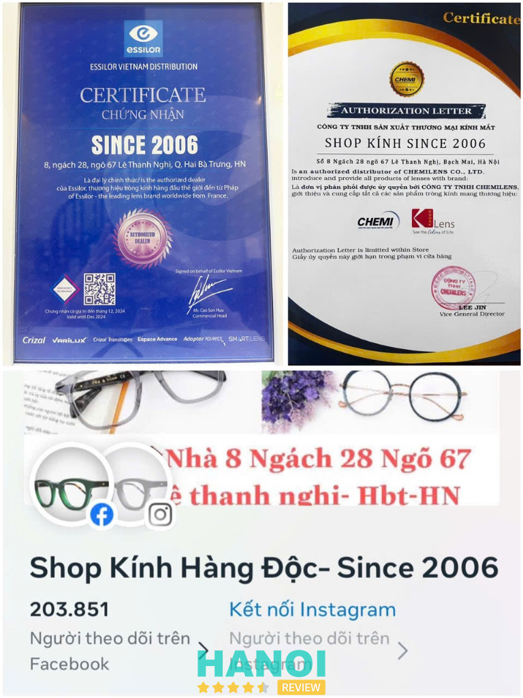
Với gần hai thập kỷ kinh nghiệm chăm sóc và tư vấn thị lực cho hàng ngàn khách hàng, Shop Kính Hàng Độc – Since 2006 đặc biệt được nhiều phụ huynh tin tưởng đưa con đến đo và cắt kính. Nhờ sử dụng tròng chính hãng cùng hướng dẫn cách đeo kính khoa học, nhiều em nhỏ duy trì được thị lực ổn định, tốc độ tăng độ chậm, giúp cửa hàng sở hữu một lượng khách nhí đáng kể. Đặc biệt, tất cả sản phẩm tại đây đều là hàng chính hãng, tuyệt đối nói không với hàng giả và hàng trôi nổi.
Không chỉ cung cấp kính mắt chất lượng, cửa hàng còn hỗ trợ dịch vụ đo khúc xạ miễn phí. Tất cả đều được thực hiện bởi kỹ thuật viên có chứng chỉ chuyên môn của Bộ Y tế, kết hợp với hệ thống máy Nidek Nhật Bản cao cấp, cho độ chính xác gần như tuyệt đối. Chính nhờ sự chuyên nghiệp và tận tâm trong tư vấn, Shop Kính Hàng Độc – Since 2006 đã xây dựng được niềm tin vững chắc từ khách hàng.
Vì sao nên chọn Shop Kính Hàng Độc – Since 2006?
- 100% sản phẩm chính hãng.
- Chính sách bảo hành 6 tháng với lỗi từ nhà sản xuất (1 đổi 1 miễn phí).
- Đổi trả trong 7 ngày nếu không hài lòng, không cần lý do.
- Đo, cắt kính cận – viễn – loạn bằng máy Nidek Nhật Bản tự động toàn phần, đảm bảo kết quả chính xác.
- Đội ngũ kỹ thuật viên chuyên nghiệp, được đào tạo bài bản và có chứng chỉ khúc xạ từ Bộ Y tế.
- Chỉ cung cấp tròng kính chính hãng do các công ty phân phối chính thức tại Việt Nam nhập khẩu.
- Tất cả tròng kính đều được bảo hành đầy đủ.
- Dịch vụ bảo dưỡng, sửa chữa và làm mới miễn phí trong suốt quá trình sử dụng.
- Giá bán cạnh tranh, thường thấp hơn thị trường từ 20% – 30%.
Thông tin liên hệ:
- Cơ sở 1: Số nhà 8, Ngách 28, Ngõ 67 Lê Thanh Nghị, Hai Bà Trưng, Hà Nội – Hotline: 0912 083 200 (CÁC ĐỊA CHỈ KHÁC ĐỀU LÀ GIẢ MẠO)
- Cơ sở 2: 123/28/8A Nguyễn Xí, Phường 26, Q. Bình Thạnh, TP. Hồ Chí Minh – Hotline: 0912 083 200 & 0989 366 477
- Fanpage: fb.com/ShopKinh2006
- Website: shopkinh2006.com
Mắt Kính Hà Đông
Mắt Kính Hà Đông là một trong những thương hiệu nổi bật tại Hà Nội trong lĩnh vực cung cấp dịch vụ cắt kính cận, được nhiều khách hàng tin tưởng lựa chọn. Với hơn 10 năm kinh nghiệm trong ngành, Mắt Kính Hà Đông mang đến các sản phẩm kính cận chất lượng cao, cùng dịch vụ chăm sóc khách hàng chu đáo và chuyên nghiệp.
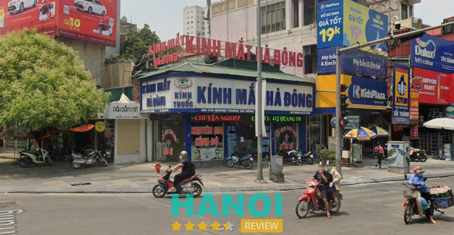
Công nghệ đo mắt hiện đại, chính xác tuyệt đối
Mắt Kính Hà Đông sử dụng công nghệ đo mắt tiên tiến, đảm bảo kết quả đo độ chính xác cao nhất. Hệ thống máy móc hiện đại giúp xác định độ cận của mỗi khách hàng một cách nhanh chóng và chính xác, từ đó lựa chọn tròng kính phù hợp. Quy trình đo mắt tại đây diễn ra nhanh gọn, không gây cảm giác khó chịu, mang đến sự tiện lợi tối đa cho người sử dụng.
Tròng kính và gọng kính chính hãng, chất lượng đảm bảo
Mắt Kính Hà Đông cam kết cung cấp các sản phẩm kính cận chính hãng với chất lượng vượt trội. Cả gọng kính và tròng kính đều đến từ các thương hiệu uy tín, có nguồn gốc rõ ràng. Với mục tiêu mang đến cho khách hàng những sản phẩm chất lượng nhất, Mắt Kính Hà Đông luôn kiểm tra kỹ lưỡng trước khi đưa đến tay người tiêu dùng, giúp bạn yên tâm sử dụng lâu dài.
Lựa chọn gọng kính phong phú, phù hợp với mọi nhu cầu
Mắt Kính Hà Đông có một bộ sưu tập gọng kính đa dạng, đáp ứng mọi sở thích và xu hướng thời trang. Từ những thiết kế đơn giản, thanh lịch cho đến các mẫu kính cá tính, thời thượng, khách hàng có thể dễ dàng lựa chọn sản phẩm phù hợp với phong cách cá nhân. Bên cạnh đó, đội ngũ nhân viên sẽ hỗ trợ tư vấn giúp bạn chọn được chiếc kính phù hợp nhất với khuôn mặt và nhu cầu sử dụng.
Giá cả minh bạch, không ép buộc khách hàng
Tại Mắt Kính Hà Đông, giá cả luôn được niêm yết công khai và rõ ràng, không có bất kỳ chi phí phát sinh nào. Điều này giúp khách hàng dễ dàng đưa ra quyết định mua sắm mà không phải lo lắng về việc bị ép buộc chọn lựa sản phẩm không phù hợp. Nhân viên tại đây luôn tư vấn tận tình, giúp bạn tìm được chiếc kính vừa vặn với nhu cầu và khả năng tài chính.
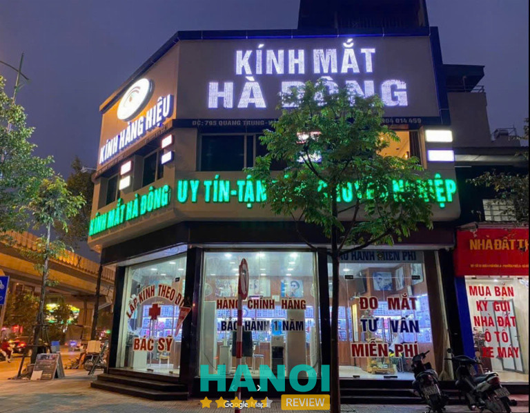
Chính sách bảo hành và dịch vụ hậu mãi chu đáo
Mắt Kính Hà Đông chú trọng đến dịch vụ sau bán hàng để đảm bảo sự hài lòng tối đa cho khách hàng. Chính sách bảo hành tại đây minh bạch, với cam kết chỉnh gọng miễn phí trọn đời và thay ốc kính miễn phí. Ngoài ra, khách hàng còn được vệ sinh kính định kỳ miễn phí để sản phẩm luôn được giữ trong tình trạng tốt nhất. Nếu độ cận thay đổi, Mắt Kính Hà Đông cũng hỗ trợ đổi tròng kính mới với nhiều ưu đãi, giúp tiết kiệm tài chính.
Chăm sóc khách hàng chuyên nghiệp, tận tâm
Một trong những yếu tố giúp Mắt Kính Hà Đông xây dựng được lòng tin từ khách hàng là đội ngũ nhân viên chuyên nghiệp, luôn sẵn sàng hỗ trợ, giải đáp mọi thắc mắc và đưa ra những lời khuyên chính xác, hợp lý. Mắt Kính Hà Đông không chỉ cung cấp sản phẩm chất lượng mà còn mang đến cho khách hàng dịch vụ tận tâm, giúp bạn có được trải nghiệm mua sắm hài lòng nhất.
Hệ thống cửa hàng rộng khắp, tiện lợi cho khách hàng
Mắt Kính Hà Đông hiện có 4 cơ sở tại các thành phố lớn trên toàn quốc, trong đó có Hà Nội. Các cơ sở đều được trang bị đầy đủ các thiết bị hiện đại, phục vụ khách hàng nhanh chóng và hiệu quả. Điều này giúp khách hàng dễ dàng tiếp cận các dịch vụ và sản phẩm chất lượng tại bất kỳ cơ sở nào gần nhất.
Với dịch vụ tận tâm, sản phẩm chất lượng và chính sách bảo hành minh bạch, Mắt Kính Hà Đông là một địa chỉ lý tưởng cho những ai đang tìm kiếm dịch vụ cắt kính cận uy tín tại Hà Nội. Hãy đến với Mắt Kính Hà Đông để tận hưởng những trải nghiệm mua sắm và dịch vụ hoàn hảo nhất.
Thông tin liên hệ:
- Địa chỉ:
412 Quang Trung, Hà Đông, Hà Nội
793 Quang Trung, Hà Đông, Hà Nội
Hà Nam: 69 Phủ Lý, Biên Hòa
Nam Định: 376 Trần Hưng Đạo, Lộc Vượng - Số điện thoại: 0986383940 – 0375867286 – 0852694133 – 0966212827
Bệnh Viện Mắt Kĩ Thuật Cao Hà Nội (HITEC)
Bệnh Viện Mắt Kĩ Thuật Cao Hà Nội (HITEC) ra đời từ năm 2000 với sứ mệnh đặt ra là áp dụng những phương pháp chăm sóc mắt tiên tiến nhất và mang đến dịch vụ khám chữa bệnh nhãn khoa với chất lượng cao và chi phí hợp lý.
Tại HITEC, sự chuyên nghiệp và kinh nghiệm của đội ngũ bác sĩ đảm bảo mỗi khách hàng đều trải qua quá trình đo khám kỹ lưỡng và nhận được đơn thuốc phù hợp với tình trạng sức khỏe mắt của họ. Bệnh nhân còn được tặng thẻ bệnh nhân mà không tốn phí.
Ngoài ra, việc tư vấn về các loại kính cận và quy trình mài lắp kính được thực hiện một cách nhiệt tình và chu đáo. Khi bạn chọn cắt kính tại bệnh viện, cam kết bảo hành theo quy định, đồng nghĩa với việc sửa chữa kính trong thời gian sử dụng nếu có vấn đề xuất phát từ sản phẩm.
Trước khi rời khỏi bệnh viện, bạn sẽ nhận được hướng dẫn cụ thể về cách chăm sóc và bảo quản mắt cũng như sản phẩm kính của mình để đảm bảo sự bền bỉ và hiệu quả.
Đội ngũ nhân viên tại HITEC không chỉ có kiến thức sâu rộng về kính cận và các sản phẩm, dịch vụ liên quan mà còn mang đến sự tận tâm trong việc tư vấn và giải đáp mọi thắc mắc của khách hàng.
Thông tin liên hệ:
- Địa chỉ: 51 Trần Nhân Tông, P. Bùi Thị Xuân, Q. Hai Bà Trưng, Hà Nội
- Điện thoại: 024 7778 6868
- Email: media@benhvienmat.vn
- Website: benhvienmat.vn
- Fanpage: FB.com/hethongbenhvienmathitec
Kính mắt Eye Plus
Khi quyết định chọn mua kính cận, nỗi lo lắng về độ uy tín và chất lượng thường là điều khiến nhiều người phải đau đầu. Để chấm dứt lo ngại đó, hãy đến ngay với kính mắt Eye Plus, nơi giải đáp mọi thắc mắc của bạn mà còn cam kết mang đến trải nghiệm mua sắm không làm bạn thất vọng.
Tại Kính mắt Eye Plus, việc đo khám mắt là hoàn toàn miễn phí, thực hiện bằng dàn máy móc tự động hiện đại từ Hàn Quốc, đội ngũ kỹ thuật viên có kinh nghiệm. Điều này đảm bảo rằng kết quả đo sẽ là chính xác nhất, giúp bạn lựa chọn tròng kính phù hợp với từng nhu cầu một cách chính xác.
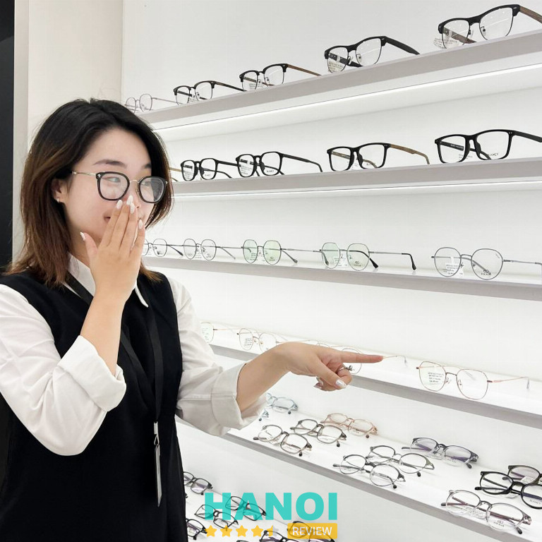
Đội ngũ nhân viên tư vấn giúp bạn lựa chọn được một đôi kính phù hợp với khuôn mặt bạn và còn đảm bảo rằng chúng đáp ứng đúng với thị lực. Ngoài ra, dịch vụ mài lắp cắt kính tại đây sử dụng dây chuyền tự động nhập khẩu, đảm bảo độ chính xác và sự chắc chắn trong việc liên kết giữa mắt và tròng kính.
Không chỉ dừng lại ở đó, kính mắt Eye Plus còn mang lại sự an tâm cho khách hàng thông qua các chính sách bảo hành và dịch vụ hỗ trợ sau bán hàng, bao gồm nắn chỉnh, sửa chữa, thay thế phụ tùng miễn phí. Bảo hành tròng kính được thực hiện một cách cẩn thận, đảm bảo sự thoải mái và không gây mệt mỏi hay chóng mặt khi sử dụng.
Thông tin liên hệ:
- Địa chỉ: 213 Trần Đại Nghĩa, P. Đồng Tâm, Q. Hai Bà Trưng, Hà Nội
- Điện thoại: 1900 3116
- Email: kinhmateyeplus@gmail.com
- Website: kinhmateyeplus.com
- Fanpage: FB.com/kinhmateyeplus
- Giờ mở cửa: 9:00 – 21:30
Kính mắt Ngọc Hiếu
Kính mắt Ngọc Hiếu, địa chỉ đáng tin cậy tại Hà Nội và trên toàn quốc, tự hào mang đến những trải nghiệm đặc biệt trong lĩnh vực kính mắt. Với cam kết đo khám mắt miễn phí chất lượng, chế độ bảo hành đầy đủ và dịch vụ chu đáo, là nơi chăm sóc tốt nhất cho đôi mắt của bạn.
Đội ngũ nhân viên tận tâm, được đào tạo chuyên sâu và giàu kinh nghiệm, đảm bảo rằng mọi khách hàng đều được phục vụ với sự chuyên nghiệp và tận tâm. Máy móc kỹ thuật hiện đại giúp nâng cao chất lượng dịch vụ và mang đến những sản phẩm kính mắt thời trang hàng đầu.
Kính mắt Ngọc Hiếu chuyên cung cấp các loại kính mắt thời trang và còn chuyên thay mắt kính và gọng kính đa dạng. Khách hàng khi đến với Ngọc Hiếu sẽ được trải nghiệm không gian mua sắm thoải mái và tiện lợi, cùng với dịch vụ tư vấn miễn phí và đo khám mắt chuyên sâu.
Ngoài ra, Ngọc Hiếu cam kết bảo hành và đổi mới kính trong khoảng thời gian ngắn nhất, từ 3 – 7 ngày. Sửa chữa và bảo hành các loại kính miễn phí là cam kết đảm bảo sự an tâm cho khách hàng.
Với hơn 15 năm kinh nghiệm, Ngọc Hiếu tự tin là địa chỉ cung cấp sản phẩm chất lượng cao và dịch vụ hoàn hảo, mang đến một trải nghiệm đẳng cấp và chăm sóc toàn diện cho sức khỏe và vẻ đẹp của đôi mắt bạn.
Thông tin liên hệ:
- Địa chỉ: 151 Lê Duẩn, P. Cửa Nam, Q. Hoàn Kiếm, Hà Nội
- Điện thoại: 0973 819 928
- Email: pvhan1988@gmail.com
- Website: kinhmatchatluong.com
- Fanpage: FB.com/kinhmatngochieu
- Giờ mở cửa: 08:00 – 22:00
GỢI Ý: 10 Shop hoa tươi tại Hà Nội nổi tiếng, dịch vụ tốt, hoa đẹp
Công ty TNHH Kính Mắt Quang Nhãn
Công ty TNHH Kính Mắt Quang Nhãn là địa chỉ cắt kính cận nổi tiếng tại Hà Nội, mang đến trải nghiệm độc đáo và chất lượng tốt cho khách hàng. Với hơn 5 năm xây dựng và phát triển, Quang Nhãn là được nhiều người biết đến và lựa chọn.
Công ty TNHH Kính Mắt Quang Nhãn đặt sự chú trọng đặc biệt vào chất lượng và nguồn gốc của từng sản phẩm. Đội ngũ nhân viên tận tâm có kiến thức sâu rộng về kính cận và còn sở hữu sự am hiểu rõ ràng về mọi sản phẩm trong danh mục.
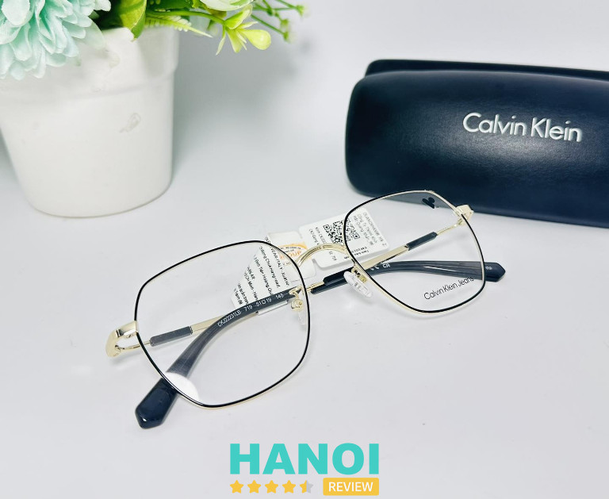
Không gian của cửa hàng rộng rãi, sạch sẽ, tạo cảm giác thoải mái và dễ chịu cho khách hàng. Trang thiết bị và máy móc hiện đại đảm bảo quy trình cắt kính diễn ra chính xác nhất. Quang Nhãn cam kết tư vấn một cách rõ ràng và chi tiết về giá cả, chủng loại, mẫu mã, kiểu dáng, màu sắc, phù hợp với khuôn mặt và tình trạng mắt của từng khách hàng.
Chính sách chăm sóc khách hàng tại cửa hàng không chỉ tốt mà còn đặt trọng điểm vào việc phục vụ niềm nở, ân cần, và vui vẻ. Tại Công ty TNHH Kính Mắt Quang Nhãn, mang muốn mang lại không gian mua sắm thú vị và đáp ứng mọi nhu cầu của bạn một cách hoàn hảo.
Thông tin liên hệ:
- Địa chỉ: 98 Trần Phú, P. Mộ Lao, Q. Hà Đông, Hà Nội
- Điện thoại: 024 6259 8865
- Fanpage: FB.com/kinhmatquangnhan
Kính mắt Bích Ngọc
Kính mắt Bích Ngọc là địa điểm được nhiều người yêu thích trong thị trường kính mắt Hà Nội. Được đánh giá cao bởi chất lượng và sản phẩm đa dạng, nhiều mẫu mã đẹp.
Showroom của kính mắt Bích Ngọc không chỉ là nơi bạn có thể tìm thấy hàng loạt sản phẩm mắt kính chính hãng mà còn là trải nghiệm đặc biệt với cơ sở vật chất hiện đại và đội ngũ nhân viên chuyên nghiệp. Bích Ngọc tự tin là địa chỉ tin cậy cho việc đo khám mắt và cắt kính cận tốt nhất tại Hà Nội, nơi mà sự lựa chọn của bạn trở nên đơn giản và hiệu quả.
Tại kính mắt Bích Ngọc, có dịch vụ đo thị lực miễn phí, được tư vấn tận tình, giúp bạn chọn lựa được những sản phẩm phù hợp và ưng ý nhất. Cửa hàng được thiết kế độc đáo, mang đến không gian thử kính thoải mái, nơi bạn có thể thư giãn, ngắm nhìn đường phố, và check-in Facebook trong không gian thoáng đãng, xanh mướt của thiên nhiên.
Kính mắt Bích Ngọc là nơi cung cấp sản phẩm chất lượng cao, cam kết với chính sách bảo hành chuyên nghiệp, hậu mãi chu đáo. Ngoài ra, cửa hàng tự hào về sự minh bạch tuyệt đối trong mọi giao dịch, từ giá cả cho đến thông tin về sản phẩm. Bạn không chỉ mua kính, mà còn trải nghiệm sự chất lượng và sự tận tâm của đội ngũ Kính mắt Bích Ngọc.
Thông tin liên hệ:
- Địa chỉ: 110 Hòa Mã, P. Ngô Thì Nhậm, Q. Hai Bà Trưng, Hà Nội
- Điện thoại: 0947 511 666
- Email: bichngocoptical@gmail.com
- Website: kinhmatbichngoc.vn
- Fanpage: FB.com/bichngocoptic
- Giở mở cửa: 8:30 – 21:30
THAM KHẢO: 5 Cửa hàng bán áo dài cách tân tại Hà Nội đẹp, vải chất lượng
Kính mắt Việt Tín
Kính mắt Việt Tín là địa chỉ hàng đầu tại thị trường Hà Nội, chuyên phát triển và cung cấp đa dạng sản phẩm kính mắt cao cấp từ gọng kính, mắt kính cận, viễn, loạn thị đến hai tròng, đa tròng, mắt kính đổi mầu, chống phản quang, chống tĩnh điện, và mắt phân cực.
Cửa hàng nhập khẩu từ các hãng kính danh tiếng trên thế giới như Hàn Quốc, Nhật Bản, Đức, Mỹ, đồng thời đại diện cho những thương hiệu hàng đầu như Montblanc, Chopard, Fred, BVLGari, S.T Dupont, Dolce & Gabbana, Burberry, Gucci, Dior, Ray-Ban, Cartier, Bentley, Lotos, Porsche Design, và nhiều khác nữa.
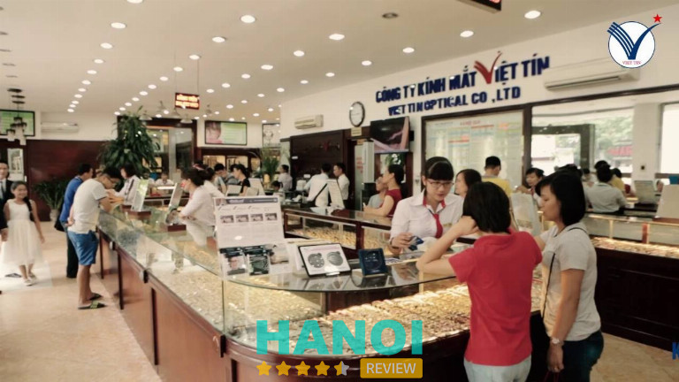
Đội ngũ bác sĩ chuyên sâu và giàu kinh nghiệm được đào tạo bài bản và sử dụng các thiết bị hiện đại, cam kết mang lại dịch vụ khám phát hiện và tư vấn chính xác. Đồng thời, đội ngũ kỹ thuật viên tay nghề cao, đảm bảo mài và lắp ráp kính mắt một cách hoàn hảo.
Sự đa dạng về mẫu mã và giá thành, cùng với đội ngũ nhân viên tư vấn có kiến thức chuyên sâu, sẽ giúp khách hàng lựa chọn được kiểu dáng mắt kính phù hợp với gương mặt.
Thông tin liên hệ:
- Địa chỉ: C4/142 Giãng Võ, Khu tập thể Giảng Võ, Q. Ba Đình, Hà Nội
- Điện thoại: 024 3726 4466
- Email: kinhmatviettin@gmail.com
- Website: kinhmatviettin.vn
- Fanpage: FB.com/kinhmatviettin
- Giờ mở cửa: 08:00 – 19:30
Cửa hàng Kính Mắt Jimmy & Charice
Kính Mắt Jimmy & Charice là điểm đến đa dạng với một loạt sản phẩm đẳng cấp như kính cận, kính râm, tròng cận – loạn – viễn, đồng hồ chất lượng (hãng, Hàn Quốc), túi (handbag, clutch), trang sức lụa chọn từ khuyên tai, vòng cổ, nhẫn, cài áo đến vòng tay và bạc 925. Tất cả những sản phẩm này đều có giá cả hợp lý, phù hợp với đa dạng nhu cầu của khách hàng.
Tại đây đặt sự chú trọng cao vào chất lượng sản phẩm, cam kết chỉ cung cấp hàng chính hãng từ các nhà sản xuất uy tín trong và ngoài nước. Tại kính Mắt Jimmy & Charice, không có chỗ cho hàng giả/nhái, và nguồn gốc xuất xứ sản phẩm luôn được rõ ràng. Điều này đảm bảo rằng khách hàng sẽ luôn tìm thấy sản phẩm ưng ý mà không phải đối mặt với chi phí không cần thiết.
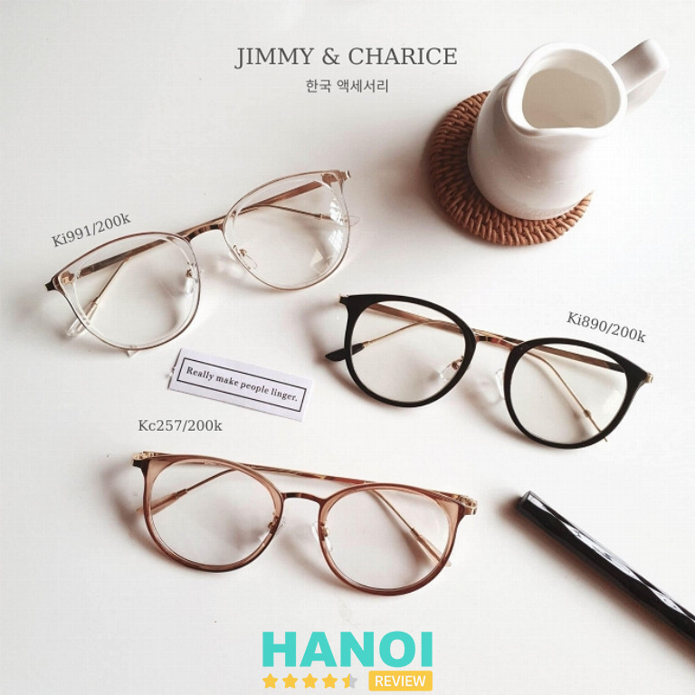
Khi đến cửa hàng để cắt kính cận, bạn sẽ được đón tiếp với sự niềm nở và tư vấn tận tình. Cửa hàng cung cấp dịch vụ đo mắt chuyên nghiệp bởi những chuyên viên có chuyên môn cao, giúp xác định chính xác độ cận và hạn chế mọi sai lệch không mong muốn.
Chính sách chăm sóc khách hàng đảm bảo mọi quyền lợi của bạn khi mua sắm và sử dụng dịch vụ. Hơn nữa, Jimmy & Charice cung cấp các phương thức thanh toán linh hoạt và hỗ trợ vận chuyển tận nhà với phí thấp, giúp tiết kiệm ngân sách của bạn. Với mong muốn mang đến trải nghiệm mua sắm và sử dụng dịch vụ hoàn hảo từ A đến Z cho khách hàng.
Thông tin liên hệ:
- Địa chỉ: 146 Chùa Láng, P. Láng Thượng, Q. Đống Đa, Hà Nội
- Điện thoại: 0383 038 757
- Email: jimmycharice@gmail.com
- Website: jimmycharice.com.vn
- Fanpage: FB.com/Kinhmatjimmycharice
Shop Kính Hàng Độc – Since 2006
Shop Kính Hàng Độc, với 15 năm kinh nghiệm, không chỉ là một cửa hàng kính uy tín tại Hà Nội mà còn là địa chỉ đáng tin cậy cho những người đang tìm kiếm gọng kính chất lượng. Điều đặc biệt là cửa hàng cam kết chất lượng thông qua chế độ bảo hành tuyệt đối, đảm bảo mỗi sản phẩm tròng mắt được cung cấp đều đạt tiêu chuẩn cao nhất.
Với hơn 16 năm, tư vấn và chăm sóc hơn hàng ngàn đôi mắt, shop Kính Hàng Độc trở thành điểm đến đáng tin cậy cho các bậc phụ huynh đưa con khám mắt, đo kính mắt và cắt kính. Khách hàng nhỏ tuổi cũng được hướng dẫn sử dụng kính đúng cách, giảm thiểu tăng độ tròng mắt theo quá trình trưởng thành.
Với cam kết cung cấp sản phẩm chính hãng 100%, shop Kính Hàng Độc không chỉ đưa ra chính sách bảo hành 6 tháng mà còn thực hiện đổi hoàn sản phẩm trong vòng 1 tuần nếu khách hàng không hài lòng, không cần lý do. Việc đo và cắt kính cận thị, viễn thị được thực hiện bằng máy Nidek Nhật Bản tự động toàn phần, đảm bảo kết quả chính xác tuyệt đối.
Đội ngũ kỹ thuật viên chuyên nghiệp, được đào tạo và có chứng chỉ chuyên ngành về tật khúc xạ của Bộ Y tế, cùng với máy Nidek cao cấp, tạo nên sự chuyên môn và tận tâm trong việc cắt kính cận. Cửa hàng chỉ cung cấp tròng mắt chuẩn từ các công ty nhập khẩu và phân phối chính thức tại Việt Nam, loại trừ khả năng bán hàng giả mạo.
Khách hàng còn được đảm bảo bởi chính sách bảo hành đầy đủ, sửa chữa, bảo dưỡng, làm mới miễn phí trong suốt quá trình sử dụng kính. Điều này giúp giữ cho sản phẩm luôn trong tình trạng tốt nhất.
Với các ưu điểm trên và cam kết giá rẻ hơn thị trường từ 20% – 30%, shop Kính Hàng Độc là lựa chọn lý tưởng cho những ai đang tìm kiếm kính chất lượng và dịch vụ chăm sóc mắt đẳng cấp. Hãy đến ngay với Shop Kính Hàng Độc để trải nghiệm dịch vụ tốt nhất.
Thông tin liên hệ:
- Địa chỉ: nhà 8, Ngách 28, Ngõ 67 Lê Thanh Nghị, Hai Bà Trưng, Hà Nội
- Điện thoại: 0912 083 200
- Email: chuthuthao123@yahoo.com
- Website: shopkinh2006.com
- Fanpage: FB.com/ShopKinh2006
THAM KHẢO: 10 Shop mỹ phẩm ở Hà Nội uy tín, hàng chính hãng
Kính mắt Thanh Lịch
Kính mắt Thanh Lịch, một đơn vị hàng đầu trong lĩnh vực kính mắt, đã góp phần làm nên uy tín của mình qua nhiều năm kinh nghiệm. Với việc trực tiếp nhập khẩu các thương hiệu mắt kính hàng đầu thế giới, công ty cam kết cung cấp sản phẩm chính hãng và chịu trách nhiệm về bảo hành tại Việt Nam.
Thanh Lịch là địa chỉ tin cậy của đông đảo khách hàng. Nơi đây mang đến một sự đa dạng về loại kính, từ gọng kính thời trang cho đến mắt kính cận, viễn, loạn thị, với những thương hiệu danh tiếng như Dior, Prada, và nhiều thương hiệu khác. Tất cả sản phẩm đều được đảm bảo là chính hãng 100%, và có chế độ bảo hành đáng tin cậy.
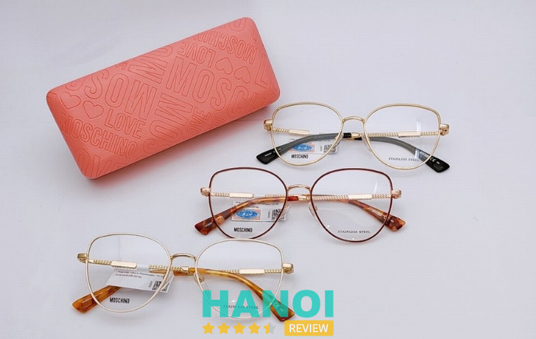
Khi ghé thăm Thanh Lịch, khách hàng sẽ được tận hưởng dịch vụ khám và đo mắt miễn phí và được phục vụ bởi đội ngũ nhân viên giàu kinh nghiệm. Họ sử dụng trang thiết bị hiện đại để đảm bảo kết quả thị lực chính xác nhất. Đồng thời, nhân viên tận tâm sẽ hỗ trợ khách hàng tư vấn và chọn lựa loại kính phù hợp với ngoại hình và xu hướng, với mức giá hợp lý.
Thanh Lịch không chỉ đại diện độc quyền cho hơn 30 thương hiệu kính mắt hàng đầu thế giới, mà còn là địa chỉ đáng tin cậy cho những người đang tìm kiếm sự đa dạng và chất lượng trong sản phẩm kính mắt.
Thông tin liên hệ:
- Địa chỉ: 97 Hàng Bông, P. Hàng Bông, Q. Hoàn Kiếm, Hà Nội
- Điện thoại: 024 3928 8444
- Email: info@kinhmat.com.vn
- Website: matkinhthanhlich.com.vn
- Fanpage: FB.com/MatKinhThanhLich
- Giờ mở cửa: 08:00–22:00
Cửa hàng Kính Mắt ViVi
Cửa hàng kính mắt ViVi là địa chỉ lý tưởng cho những ai đang tìm kiếm dịch vụ cắt kính cận đẳng cấp tại TPHCM. Nơi đây không chỉ là cửa hàng kinh doanh kính thời trang mà còn là địa điểm chuyên nghiệp với loạn – viễn – cận, đảm bảo uy tín và chất lượng.
Không gian của cửa hàng được chăm chút tỉ mỉ, tạo nên một bầu không khí thoáng đãng, sạch sẽ và sang trọng. Điều này mang lại trải nghiệm mua sắm thoải mái và dễ dàng cho khách hàng. Đội ngũ nhân viên tư vấn không chỉ nhiệt tình mà còn chuyên nghiệp, luôn sẵn sàng chia sẻ thông tin chi tiết và giải đáp mọi thắc mắc của khách hàng.
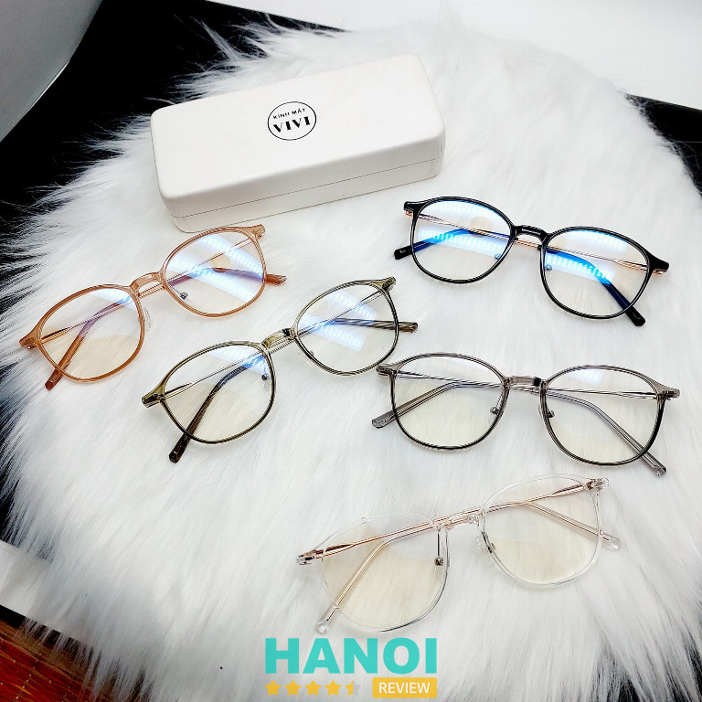
Sự đa dạng về mẫu mã, kiểu dáng và màu sắc của gọng kính cận tại đây là điểm mạnh nổi bật. Khách hàng không chỉ tìm thấy sản phẩm ưng ý mà còn được hỗ trợ đo độ cận bằng các thiết bị hiện đại. Quá trình lựa chọn tròng để phù hợp với tình trạng mắt được thực hiện chặt chẽ và chuyên nghiệp, từ việc lắp ráp đến đeo thử.
Với mức giá hợp lý, chính sách bảo hành linh hoạt và chương trình khuyến mãi thường xuyên làm tăng thêm sự hấp dẫn cho việc chọn lựa sản phẩm tại cửa hàng này.
Thông tin liên hệ:
- Địa chỉ: 47 Doãn Kế Thiện, Q. Cầu Giấy, Tp. Hà Nội
- Điện thoại: 0929 085 099
- Fanpage: FB.com/kinhmatvivi0603
7 Tiêu chí để lựa chọn cửa hàng cắt kính cận chất lượng
Việc lựa chọn một cửa hàng cắt kính cận chất lượng tại Hà Nội là điều quan trọng để đảm bảo rằng bạn nhận được sản phẩm chính xác. Dưới đây là một số tiêu chí quan trọng mà bạn có thể tham khảo khi chọn cửa hàng cắt kính cận:
- Chất lượng sản phẩm: Đảm bảo cửa hàng cung cấp tròng mắt chất lượng, chính hãng, và có nguồn gốc rõ ràng. Kiểm tra các thương hiệu kính mắt mà cửa hàng cung cấp, đảm bảo chúng là từ các nhãn hiệu uy tín.
- Kinh nghiệm và uy tín: Chọn cửa hàng có kinh nghiệm lâu đời và đã đạt được uy tín tốt. Đọc đánh giá từ khách hàng trước đó để đánh giá chất lượng dịch vụ.
- Đội ngũ chuyên gia: Lựa chọn cửa hàng có đội ngũ kỹ thuật viên chuyên nghiệp, được đào tạo đầy đủ về cắt kính cận và tư vấn khúc xạ.
- Trang thiết bị và công nghệ: Tìm kiếm những cửa hàng sử dụng các thiết bị và công nghệ hiện đại để đo kính và cắt kính chính xác.
- Chính sách bảo hành: Xem xét chính sách bảo hành của cửa hàng, bao gồm thời gian bảo hành và điều kiện đổi trả sản phẩm.
- Giá cả hợp lý: Có thể so sánh giá của cửa hàng với thị trường khác để đưa ra một lựa chọn hợp lí.
- Đa dạng sản phẩm: Chọn cửa hàng cung cấp nhiều lựa chọn về kiểu dáng, chất liệu, và thương hiệu để bạn có sự đa dạng trong việc chọn lựa.
Trên đây là 14 Địa chỉ cắt kính cận tại Hà Nội chuẩn xịn, giá cả hợp lý mà HaNoiReview đã tổng hợp được. Hy vọng rằng qua bài viết này, bạn sẽ tìm được một cửa hàng phù hợp với nha cầu của mình.
Có thể bạn quan tâm
- 5 Cửa hàng bán điện thoại tại Hà Nội được tin tưởng nhất
- 10 Địa chỉ mổ cận tại Hà Nội uy tín, an toàn, bác sĩ giỏi
- 10 Phòng khám mắt tại Hà Nội bác sĩ giỏi, dịch vụ chất lượng
- 5 Địa chỉ vẽ tranh tường tại Hà Nội đẹp, uy tín, giá cả hợp lý
DOANH NGHIỆP: Đăng tải thông tin MIỄN PHÍ.
Tin đọc nhiều


Trở thành người đầu tiên bình luận cho bài viết này!